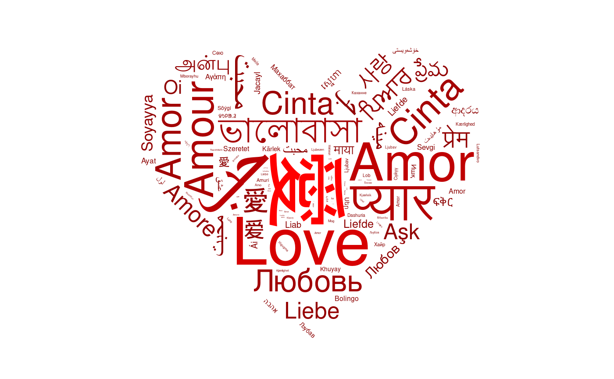
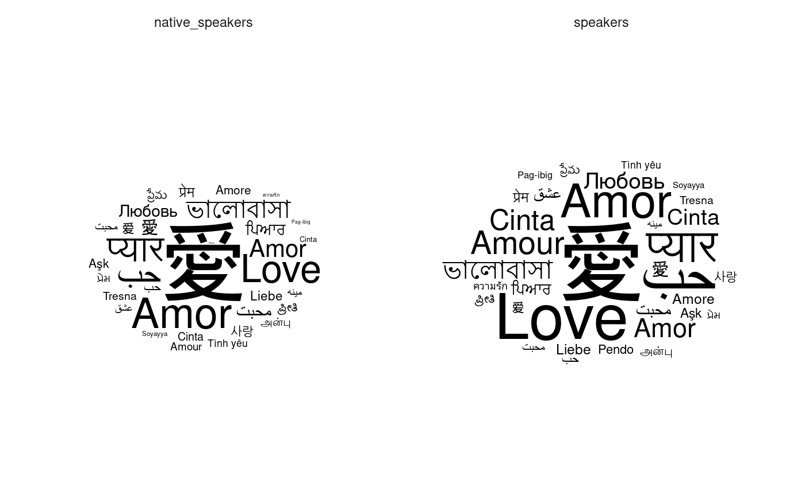

ggwordcloud provides a word cloud text geom for ggplot2. The placement algorithm implemented in C++ is an hybrid between the one of wordcloud and the one of wordcloud2.js. The cloud can grow according to a shape and stay within a mask. The size aesthetic is used either to control the font size or the printed area of the words. ggwordcloud also supports arbitrary text rotation. The faceting scheme of ggplot2 can also be used. Two functions meant to be the equivalent of wordcloud and wordcloud2 are proposed.
Installation
You can install the released version of ggwordcloud from CRAN with:
or the development version from the github repository
Please check the latest development version before submitting an issue.
Some word clouds
Because sometimes, pictures are better than a thousand words…
library(ggwordcloud)
#> Loading required package: ggplot2
data("love_words_small")
set.seed(42)
ggplot(love_words_small, aes(label = word, size = speakers)) +
geom_text_wordcloud() +
scale_size_area(max_size = 24) +
theme_minimal()
data("love_words")
set.seed(42)
ggplot(
love_words,
aes(
label = word, size = speakers,
color = speakers
)
) +
geom_text_wordcloud_area(aes(angle = 45 * sample(-2:2, nrow(love_words),
replace = TRUE,
prob = c(1, 1, 4, 1, 1)
)),
area_corr_power = 1,
mask = png::readPNG(system.file("extdata/hearth.png",
package = "ggwordcloud", mustWork = TRUE
)),
rm_outside = TRUE
) +
scale_size_area(max_size = 25) +
theme_minimal() +
scale_color_gradient(low = "darkred", high = "red")
#> Some words could not fit on page. They have been removed.
library(dplyr, quietly = TRUE, warn.conflicts = FALSE)
library(tidyr, quietly = TRUE)
set.seed(42)
ggplot(
love_words_small %>%
gather(key = "type", value = "speakers", -lang, -word) %>%
arrange(desc(speakers)),
aes(label = word, size = speakers)
) +
geom_text_wordcloud_area() +
scale_size_area(max_size = 20) +
theme_minimal() +
facet_wrap(~type)
More examples are available in the vignette.